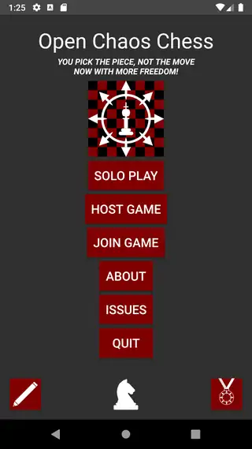
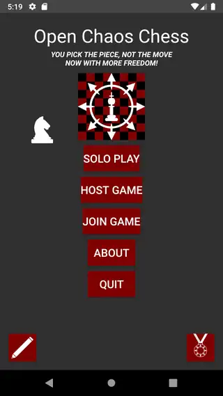

Open Chaos Chess
ألعاب
Open Chaos Chess is a variation of chess where you can pick the piece that moves, but the moves are random. As such, you no longer win by checkmates. Instead, you win by eliminating your opponent's pieces. The game functions completely without any internet connection, but Bluetooth is required to pl
✓ ترخيص مفتوح (GPL-3.0-or-later) · آخر تحديث: 2023-05-15
1.9.9الإصدار
1.1 MBالحجم
GPL-3.0-or-laterالرخصة
Open in Kanzتحميل APK (1.1 MB)
Download APK
SHA-256: 3d1d63a593bd4844a3e4948b83dbb7c2e53165d8cb62c361c0a2ab20f3834e75


تطبيقات تانية لنفس المطوّر (2)
More apps from this developer: dev.corruptedark
امسح الكود لفتح صفحة التطبيق
Scan to open this app page
لو كنز مش متثبت عندك: نزّل متجر كنز.
Not installed? Get the Kanz store.